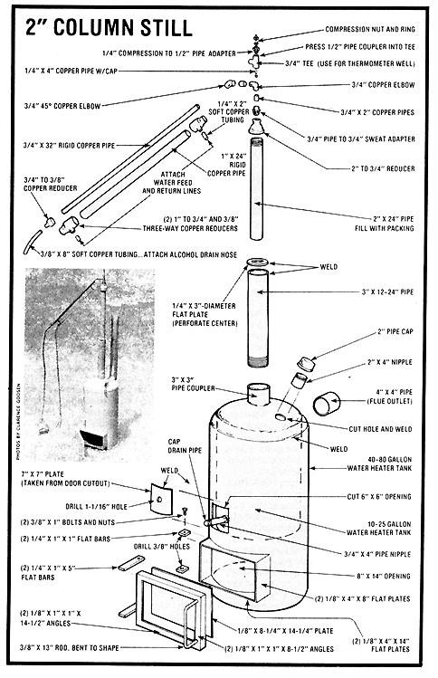

Here's a bonus for would-be homestead distillers...
Now that the "grassroots" homemade alcohol fuel movement is rapidly gaining momentum, it's no wonder that farmsteaders and town dwellers alike are searching for simple, cost-effective ways to "brew up their own". And, of course, the major start-up expense-especially for a smallscale operation-is the cost of the equipment itself.
With this concern in mind, MOTHER is glad to provide her readers with a couple of backyard still designs from alcohol researcher/self-publisher Clarence Goosen . . . which have not only proven themselves effective, but which anyone with welding skills can construct inexpensively in a matter of hours. The first distillery-simply a tank within a tank-makes a great "test bed" for various column designs and mash recipes. By scrounging parts, anyone should be able to construct the mini-still for about $25, and the tiny "percolator" can turn out almost 1/2 gallon of 180-proof fuel per hour.
The major components of Clarence's baby distillery are two discarded water heater tanks (formerly electrically fired models are easier to work with, and non-galvanized units don't give off noxious fumes during the cutting and welding process as do their "coated" cousins) . . . some pipe for the column, filler, and drain . . . copper conduit for the condenser assembly . . . and a few assorted fittings and pieces of steel stock.
When choosing the tanks you'll use, make sure your "vat-to-be" is leak-free, and about 4" smaller in diameter (and 12" to 16" shorter in height) than is the "firebox" container. Before you cut the top off the larger tank and weld the small cauldron to it, mark the spot where the drain pipe will protrude through the firebox wall, and cut a 6" X 6" opening in the larger container's jacket at that point.
Follow our exploded drawing to assemble the remainder of your "budget" still. The two-inch column can be filled with rolled-up nylon window screening, or-if you weld a perforated plate at the bottom of the tube-it can be packed with short sections of 1/2" copper conduit, loosely woven rustproof metal scrubbing pads, or commercial packing (if you're willing to pay the additional cost of the manufactured material). The condenser is nothing more than a conduit set within a larger tube that serves as a water jacket. (If you want to keep track of column temperature for testing purposes, replace the outlet elbow for the vapors with a tee fitting .. . which can then be adapted to serve as a thermometer well.)
The second design-a four-inch column model-is capable of producing about two gallons per hour of 90% pure ethanol fuel. Naturally, because this model is larger and somewhat more sophisticated than the two-inch column still, its cost is greater . . . but the entire assembly can probably be built for under $200 in about 30 hours of spare time tinkering in your shop.
Although the illustration is largely self-explanatory, there are a few fine points that should be mentioned. The 40- to 80-gallon tank should, of course, be leak-free and preferably nongalvanized, and all its unused fittings must be plugged. Since the column will have to be filled with pall rings (or some other loose material), it will also be necessary to insert a drilled packing support plate in the pipe-at its bottom flange-to prevent the packing from falling into the mash vat.
Both the internal heat exchanger and the condenser are simply lengths of 1/4" O.D. copper tubing, wound into 2"-diameter coils and held in place-within their respective columns-by compression-to-pipe adapters ... which are themselves fastened to pipe couplers welded to the tube's walls. (The coils can be formed by wrapping the soft tube around a 1-1/2"-thick section of pipe or wooden dowel.) Since the amount of water flow controls the critical temperature within the packed tower, the rush of cooling liquid-to the column, at least-should be regulated by a needle valve on the supply side .. . al though separate controls and lines to the heat exchanger and condenser (using a tee and a single water return hose) may be more practical. Remember, too, that you may want to install a thermometer well at the top of the column, in order to keep vapor temperatures within the desirable 175-180°F range.
Though neither of these two stills will-by itself-be capable of producing all the fuel an average American family consumes, either one certainly would be able to supply a motorcycle, home-generating unit, garden tractor, or any of countless other normally gasoline-powered pieces of equipment that are in use on homesteads and in communities across the country today . . . and that's certainly nothing to sneeze at, especially when there may eventually be no gasoline available in this nation for long periods of time!
EDITOR'S NOTE: Complete step-by-step illustrated plans for both stills shown here, plus drawings for a larger-capacity 8" column distillery-as well as detailed explanations of the operation, design, and characteristics of packed column stills-are included in Goosen's EtOH Fuel Book , an eight-volume continuing publication available for $40 (1 year, 4 issues) or $60 (2 years, 8 issues) postpaid from The Harvester Press, Dept. TMEN, P.O. Box 1669, Hendersonville, North Carolina 28793. Single copies of the first issue only (which details the four-inch column still design) can be ordered-for $11 postpaid-from the same address.
Also, MOTHER has fully illustrated, step-by-step plans available for her own 3" and 6 " column stills, at $15 each postpaid, and she's offering an alcohol fuel kit (which includes your choice of either of the still plans, plus enzymes, a hydrometer, a fermentation lock, complete instructions on how to use each item, and a copy of Brown's Alcohol Motor Fuel Cookbook ) for a price of $45 postpaid. Send your orders for any of these items to Mother's Plans, P.O. Box A, East Flat Rock, North Carolina 28726.
Finally, we'd like to remind everyone, once again, that a permit-from the U.S. Bureau of Alcohol, Tobacco, and Firearms -is absolutely necessary for anyone experimenting with producing ethanol fuel . Don't distill alcohol without one . . . you'll be breaking the law and could harm the entire alternative liquid fuel movement by doing so!
|
 |
|
|